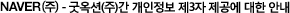

회사는 귀하께서 회사에서 제공하는 네이버 부동산의 경매서비스를 이용하고자 할 경우, 정보통신망 이용촉진 및 정보보호 등에 관한 법률 제24조의2(개인정보의 제공 동의 등)에 따라 아래와 같은 사항을 알리고 동의를 받아 귀하의 개인정보를 ㈜굿옥션에 제공합니다. 귀하가 '동의' 버튼을 클릭하면 개인정보 제공에 대해 동의한 것으로 봅니다.
1. 개인정보를 제공받는 자
- (주)굿옥션
2. 개인정보를 제공받는 자의 이용목적
- 경매서비스 이용고객 대상 법원경매내역 제공
3. 제공하는 개인정보 항목
- 네이버 아이디, 이름
4. 개인정보를 제공받는 자의 개인정보 보유 및 이용 기간
- 굿옥션(주)가 제공하는 경매 서비스 이용 기간 동안 보유하며 회원탈퇴 및 가입 해지를 요청한 경우 즉시 파기합니다.
그 밖의 사항은 굿옥션(주)의 개별서비스 이용약관 및 개인정보취급방침에 따릅니다.

제 1 조(목적)
본 약관은 굿옥션에서 제공하는 인터넷상의 모든 정보서비스(서비스명:www.goodauction.com이하 "서비스"라 함)의 이용조건 및 절차에 관한 사항과 기타이용에 필요한 사항의 규정함을 목적으로 한다.
제 2 조(약관의 효력 및 범위)
1. 본 약관은 이용자가 회원에 가입함과 동시에 효력을 발생한다.
2. 본 약관의 내용은 서비스의 화면 내에 게시하며 회사는 필요하다고 인정되는 경우 이 약관을 개정할 수 있고, 변경된 약관은 회사의 서비스를 통해 공지한다.
3. 변경된 약관은 위 제 1항과 같은 방법으로 효력을 발생한다.
제 3 조(용어의 정의)
1. 이용자 : 회사가 제공하는 서비스에 회원등록한 개인 또는 법인으로서 이용자 번호를 부여 받은자.
2. 가맹점 : 공인중개사의 업무 및 부동산거래신고에 관한 법률 제14조 3항에 의한 경매 입찰신청 대리업의 원활한 수행을 위하여, 굿옥션에서 제공하는 전국 법원 경매정보의 이용, 경매컨설팅 실무 교육 및 경매 실무 전문 상담 등 경매대행 업무관련 정보 지원과 경매 관련 전문 서비스를 제공 받을 것을 약정하고 계약 체결한 업체.
3. 이용자 번호(ID) : 서비스를 이용하기 위하여 회원등록시 이용자의 선택에 의하여 등록된 문자와 숫자의 조합.
4. 비밀번호 : 이용자번호와 일치된 이용자임을 확인하고 이용자 자신의 비밀 보호를 위하여 이용자 자신이 설정한 문자와 숫자의 조합.
5. 회비 : 회원 등록 후 회사가 제공하는 정보서비스를 이용하기 위해 납입하는 요금.
제 4 조(이용계약의 성립)
1. 이용자의 회원등록에 대한 회사의 이용 승낙에 의하여 성립한다.
제 5 조(이용신청)
1. 회원등록은 인터넷 상에서 http://www.goodauction.com로 접속 신청하거나, 전화, FAX등으로 신청한다.
2. 이용신청자가 미성년자 혹은 서비스이용자와 이용요금 납입자가 다를 경우 회사는 이를 확인할 제증명을 요구할 수 있다.
제 6 조( 이용신청의 승낙 )
회사는 제 5조에 의한 이용자의 신청이 있을 경우 이용계약의 유보 및 거절사유가 없을 시, 지체없이 이용신청을 승낙한다.
제 7 조(이용계약의 유보 및 거절)
1. 이용계약의 유보
가.서비스 설비 용량이 부족하거나, 기술적이 문제가 있다고 판단되는 경우.
나.기타 회사가 필요하다고 인정되는 경우.
2. 이용계약 거절
가.비실명으로 이용 신청한 경우.
나.허위서류를 첨부하여 이용 신청한 경우.
제 8 조(계약의 해지)
1. 본인의 해지신청(전화, FAX, 서비스, 기타)
2. 회원 등록 후 1일 이내 회비를 납부하지 않을 때, 회원등록 계약기간 만료 후 1일경과 후 재계약이 이루어지지 않을 시 회사에서 이용계약을 해지한다.
제 9 조 (가맹점)
회사는 필요에 의해 법원별로 1개의 가맹점을 아래항의 조건으로 계약할 수 있다.
1. 가맹점 가입대상은 공인중개법인과 경매에 관련된 기타컨설팅 업체로 제한하며, 법무사는 가맹점 가입대상에서 제외한다.
2. 가맹점 가입자격은 공인중개사의 매수신청대리인 등록 등에 관한 규칙에 의한 등록 또는 등록예정 공인중개사와 기타법률에 의하여 경매대행업 가능한 자여야만 한다.
3. 가맹점은 자신이 속한 법원별 일반 이용자에 대한 경매대행업을 목적으로 한다.
제 10 조 (가맹점 계약의 해지)
회사는 다음과 같은 사유가 있을 경우 가맹점 계약을 해지할 수 있다. 단, 이 경우 서면으로 그 시정을 2회 이상 사전에 요구하여야 하며, 시정이 없거나 시정이 불가능함이 명백한 경우는 즉시 해지할 수 있다.
1. 가맹점이 위법한 행위로 인하여 회사의 회원 또는 회사에게 손해를 입힌 경우
2. 가맹점이 고의 또는 상당한 과실로 회사의 대외 신뢰도를 하락시킨 경우
3. 가맹점이 본 계약을 위반한 경우
4. 매수신청대리인의 자격의 취소 기타 사항에 의하여 본 계약에 의한 가맹점 서비스를 더 이상 영위하지 못할 부득이한 사유가 있는 경우
제 11 조 (서비스 종류)
회사는 법원 부동산 경매정보를 중심으로 유료 및 공익 서비스 등 필요한 제반사항을 회사가 정하여 화면을 통하여 공지한다.
제 12 조 (서비스 이용시간)
서비스의 이용은 회사의 업무상 또는 기술상 특별한 지장이 없는 한 연중 무휴 1일을 원칙으로 한다.
단, 시스템 점검이나 보수가 있을 경우에는 공지사항을 통해 전달한 후 서비스를 일시 중단할 수 있다.
제 13 조 (서비스 이용의 제한 및 중지)
회사는 이용자가 다음에 해당하는 경우에는 서비스 이용을 제한하거나 중지할 수 있다. 이 경우 회사는 수령한 이용요금을 반환하지 않는다.
1. 타인의 이용자번호 및 비밀번호를 사용한 경우.
2. 서비스 운영을 고의로 방해하는 경우.
3. 서비스 이용요금을 정한 기일 내에 납입하지 아니한 경우.
4. 공공질서 및 미풍 양속에 저해되는 내용을 고의로 유포시킨 경우.
5. 서비스용 설비의 보수 또는 공사로 인한 부득이한 경우.
6. 국가비상사태, 서비스 설비의 장애 또는 서비스 이용의 폭주 등으로 서비스이용에 지장이 있을 때.
7. 이용자의 의무를 태만하여 이용자로써 부적당하다고 판단되는 경우.
8. 이용자의 개인적인 사유로 서비스 이용 해지 또는 납입한 이용요금을 반환요구 신청 했을 경우
9. 이용자는 제 15조를 위반하거나 또는 서비스 내용을 무단으로 복제하여 사용하는 행위
제 14 조 (회사의 의무)
1. 회사는 계속적,안정적으로 서비스를 제공할 의무가 있고, 설비에 장애가 발생될 때에는 지체없이 이를 수리 복구한다.
2. 회사는 이용자의 신상 정보를 본인의 동의 없이 타인에게 누설, 배포하여서는 아니된다. 단,전기통신관련법령등 관계법령에 의하여 관계 국가기관 등의 요구가 있을 시는 그러하지 아니한다.
3. 회사는 서비스 내용의 변경 또는 추가사항이 있을 경우에는 그 종류 및 요금 등을 온라인으로 공지한다.
제 15 조 (이용자의 의무)
1. 이용자는 이 약관에서 규정하는 사항 이외에 서비스 이용안내 또는 주의사항을 준수하여야 한다.
2. 서비스 이용을 위해서는 회원등록을 한후 3일 이내에 정한 요금을 납입하여야한다.
3. 이용자는 회사에서 허용한 경우외에는 본 서비스를 이용하여 일체의 영업 행위를 할 수 없다.
4. 서비스를 받을 권리는 이를 양도하거나 증여 등을 할 수 없으며 질권의 목적으로 사용할 수 없다.
제 16 조 (요금의 종류)
이용자가 납입하여야 할 요금의 종류는 아래와 같다.
1. 가입비 : 회원등록시 별도의 요금이 부과되지 않음
2. 회비 : 회원등록 후 유료정보를 이용하기 위하여 납입하는 요금(부가세 포함)
제 17 조 (요금체계 및 계산방법)
1.요금의 상세내용은 이용안내에 별도 공지한다.
2.해지시에는 이미 납입한 이용요금을 반환하지 않는다.
(단 제 27조 항목에 의한 '개인정보 보호방침'을 시행 하지 못 하였을 경우는 이용자에게 이용요금에 대한 반환 할 의무가 있으며 요금은 회원등록을 한 후 서비스를 제공한 일자가 매월 회비 납부일이 되며, 월 정산의 기준일이 된다.)
3.제 13조 항목에 의한 회원 자격의 정지나 상실의 경우 회사는 이에 따른 금전적 보상의 책임을 지지 않으며 이미 납입한 금액은 반환하지 않는다.
제 18 조 (요금 납입 책임자)
1. 요금납입 책임자는 서비스 이용자를 원칙으로 한다.단, 회사가 인정하는 경우에는 타인을 요금 납입 책임자로 할 수 있다.
2. 제 1항의 규정에 의한 요금납입 책임자는 이용자가 회사에 납부해야 할 요금 등의 모든 채무를 이용자와 연대하여 회사에 납부해야 할 의무가 있다.
제 19 조 (이용요금의 연체, 미납)
1. 회사가 이용요금 납입자에게 청구한 금액을 납입기일 내에 납입하지 않은 경우 서비스 이용을 제한 또는 중지할 수 있다.
2. 서비스 요금이 완납된 경우 서비스 이용이 가능하다.
제 20 조 (이용요금의 청구 및 납입)
서비스 이용요금의 청구 및 납입은 온라인에 의한 방법, 신용카드 등으로 한다.
제 21조 (이용요금 환불 및 변경)
1. 이용자는 회사가 운영하는 유료정보를 충분히 확인한 후 결제하기를 바라며, 이용자가 결제 이후 정보이용기간 동안에는 이용자의 개인적인 사유 등에 의한 이용요금에 대한 환불을 하지 않는다.
2. 이용자는 정보이용 기간동안 다른 지역으로 변경은 할 수 없다. 단, 지법단위에서 권역으로의 확대는 가능하다.
제 22조 (이용요금에 대한 이의신청)
1. 이용요금 청구에 이용자의 이의가 제기된 경우에 회사는 상세한 청구 내역을 전화, FAX, E-mail 등으로 제공한다.
2. 회사는 이용요금 청구 등에 오류가 있는 경우 이용자의 요청(이의 신청)에 따라 다음 각 호에 해당하는 조치를 한다.
가. 과다납입한 요금 등에 대하여는 그 금액을 반환한다. 반환에 필요한 수수료는 과다 납입한 이용자가 부담한다.
나. 회사는 과소 청구액에 대해서는 미수금을 재청구하며, 미수금이 완납될 때까지 서비스의 이용을 제한할 수 있으며 또는 익월에 합산청구한다.
다. 이용요금 등의 이의신청은 사유가 발생한 날로부터 3일이 경과한 때에는 이의신청을 할 수 없다.
제 23 조 (손해 배상)
회사는 회사의 귀책사유로 인해 이용자가 전체서비스를 이용하지 못함으로써 발생하는 손해에 대하여, 이용자가 그 사실을 회사에 통보하여 확인되거나, 또는 회사가 알게 된 날로부터 계산하여 24시간 이상 연속적으로 그 상태가 계속될 때에는 이용자의 청구에 대하여 손해배상할 책임이 있다.
제 24 조 (면책 조항)
1. 회사는 천재지변, 기타 이에 준하는 불가항력으로 인하여 서비스를 제공할 수 없는 경우에는 서비스 제공 중지에 대한 책임을 면한다.
2. 회사는 이용자들의 귀책사유로 인한 서비스 이용의 장애에 대하여는 책임을 면한다.
3. 회사는 이용자가 서비스를 이용하여 얻은 정보 등으로 인해 입은 손해등에 대하여는 책임을 면한다.
4. 회사는 회사가 제공하는 서비스망을 통해 제공하는 정보의 신뢰도나 정확성에 대하여는 책임을 면한다.
5. 회사는 이용자가 게시 또는 전송한 자료의 내용에 관하여는 책임을 면한다.
6. 회사는 이용자와 제휴사(가맹점, 학원, 광고업체 등)와의 거래에 관한 제반문제에 대하여 어떠한 책임도 지지 않는다.
7. (부동산 직거래)서비스 내의 거래등으로 발생하는 분쟁은 당사자간의 해결을 원칙으로 하며, 회사는 이에 책임을 면한다.
제 25 조 (관할 법원)
이용요금 등 서비스 이용상 발생한 분쟁에 대해서는 회사의 본사 소재지를 관할하는 법원을 관할법원으로 한다.
제 26 조 (규정의 준용)
이 약관에 명시되지 아니한 사항에 대해서는 상법 및 정보통신 사업법등 관계법령과 법에 명시되지 않은 부분에 대하여는 관습에 의한다.
제27조 (개인정보보호방침)
회사는 관련법령이 정하는 바에 따라서 이용자 등록 정보를 포함한 이용자의 개인정보를 보호하기 위하여 노력해야 한다. 이용자의 개인정보보호에 관해서는 관련법령 및 회사가 정하는 “개인정보보호정책”에 정한 바에 따른다.
1. (시행일)이 약관은 공시한 날로부터 시행한다.

경매정보 서비스의 핵심은 이용고객에게 상세한 경매정보를 제공함으로써 고객이 수만 개의 경매물건을 일일이 방문조사할 필요없이 고객에게 적합한 경매물건을 편리하고 빠르게 조회할 수 있는 서비스입니다. 따라서 고객의 개인정보를 인지하고 있어야 서비스 이용에 어려움이 생길 경우 빠른 처리가 가능하며, 고객에게 상세하고 수준높은 경매정보를 제공해 드리는 것을 목적으로 합니다.
2. 수집하는 개인정보의 항목
개인정보의 제3자제공에 대한 동의 및 ㈜굿옥션의 이용약관, 개인정보 수집 및 이용에 대한 안내에 동의하신 회원에 한하여 개인정보를 수집하며, 경매정보 유료 서비스 이용 과정에서 아래와 같은 결제 정보들이 수집될 수 있습니다.
- 신용카드 결제시 : 카드사명, 카드번호
- 계좌이체시 : 은행명, 계좌번호, 현금영수증 발행번호
3. 개인정보의 보유 및 이용 기간
원칙적으로 개인정보 수집 및 이용목적이 달성된 후에는 해당 정보를 지체 없이 파기합니다. 단, 다음의 정보에 대해서는 아래의 이유로 명시한 기간 동안 보존합니다.
가.상법, 전자상거래 등에서의 소비자보호에 관한 법률 등 관계법령의 규정에 의하여 보존할 필요가 있는 경우, 굿옥션(주)는 관계법령에서 정한 일정한 기간 동안 회원정보를 보관합니다. 이 경우 굿옥션(주)는 보관하는 정보를 그 보관의 목적으로만 이용하며 보존기간의 예시는 아래와 같습니다.
- 계약 또는 청약철회 등에 관한 기록 : 5년
- 대금결제 및 재화 등의 공급에 관한 기록 : 5년
- 소비자의 불만 또는 분쟁처리에 관한 기록 : 3년
나.고객에게 미리 고지하고 그 보유기간이 경과하지 아니한 경우와 개별적으로 귀하의 동의를 받은 경우에는 약속한 보유기간